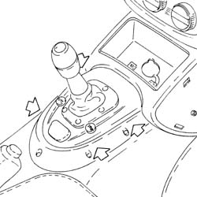
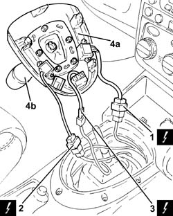
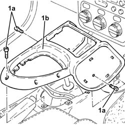

7040L37 GEAR LEVER PLATE - R R
- Path
- Procedures > 70 FITTINGS > 7040 BODYSHELL INTERIOR TRIMS AND FITTINGS > 7040L CABIN FLOOR COVERING > 7040L37 GEAR LEVER PLATE - R R
- Kind
- repair procedure (removal / refitting; the operation number is the code)
- Applies to
- engines: 2.0 JTS; all production periods
- Interactive page
- https://sloeber94.github.io/elrnDB-aGt/en/#/125001895
Applies to: engines: 2.0 JTS; all production periods
 Removing
Removing
 Refitting
Refitting- Make sure that the ignition key is in the OFF position, then disconnect the battery terminal (-).
Description | Connector | |
|---|---|---|
- | Battery | See A001 Battery |
- Remove the trim on the tunnel cover.
- Op. 7065C42 ASHTRAY (ONE) R+R
- Release the clips fastening the electro-hydraulic selection manual gearbox control lever trim.

Applies to: engines: 2.0 JTS; all production periods
- Release the electro-hydraulic selection manual gearbox control lever trim complete with lever.
1. Disconnect the electrical connection.
Description | Connector | |
|---|---|---|
1 | CITY function switch | See H39 CITY FUNCTION SWITCH |
2. Disconnect the electrical connection.
3. Disconnect the electrical connection.
4. Remove the electro-hydraulic selection manual gearbox control lever trim (4a) complete with lever (4b).

Applies to: engines: 2.0 JTS; all production periods
- Undo the bolts (1a) and remove the gear lever surrounding trim (1b).

Applies to: engines: 2.0 JTS; all production periods
Refitting
Removing- Place thegear lever surrounding trim in its housing and secure it using the bolts.
- Connect the electrical connections.
- Place the electro-hydraulic selection manual gearbox control lever trim back in its housing complete with lever and secure them using the clips.
- Op. 7065C42 ASHTRAY (ONE) R+R
- Place the trim in its housing on the tunnel cover.
- Connect the negative battery terminal (-).